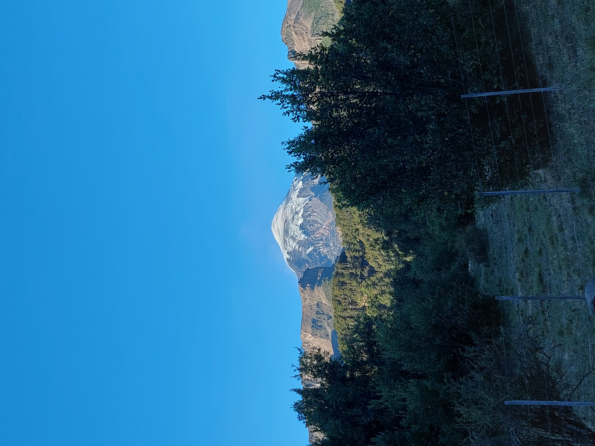
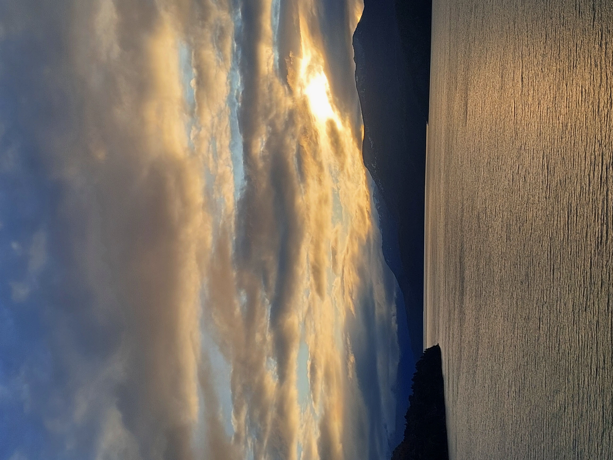
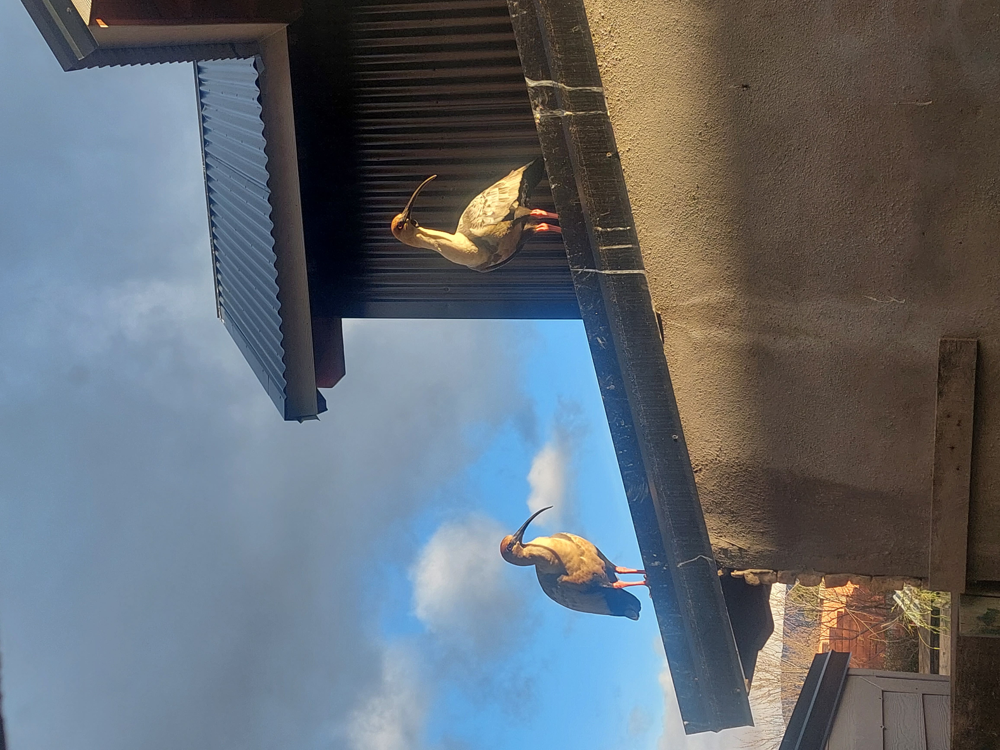
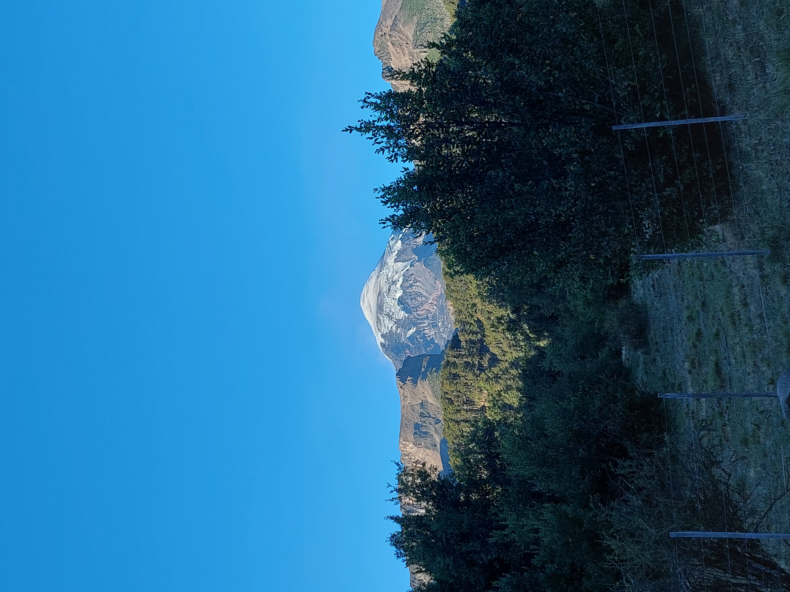
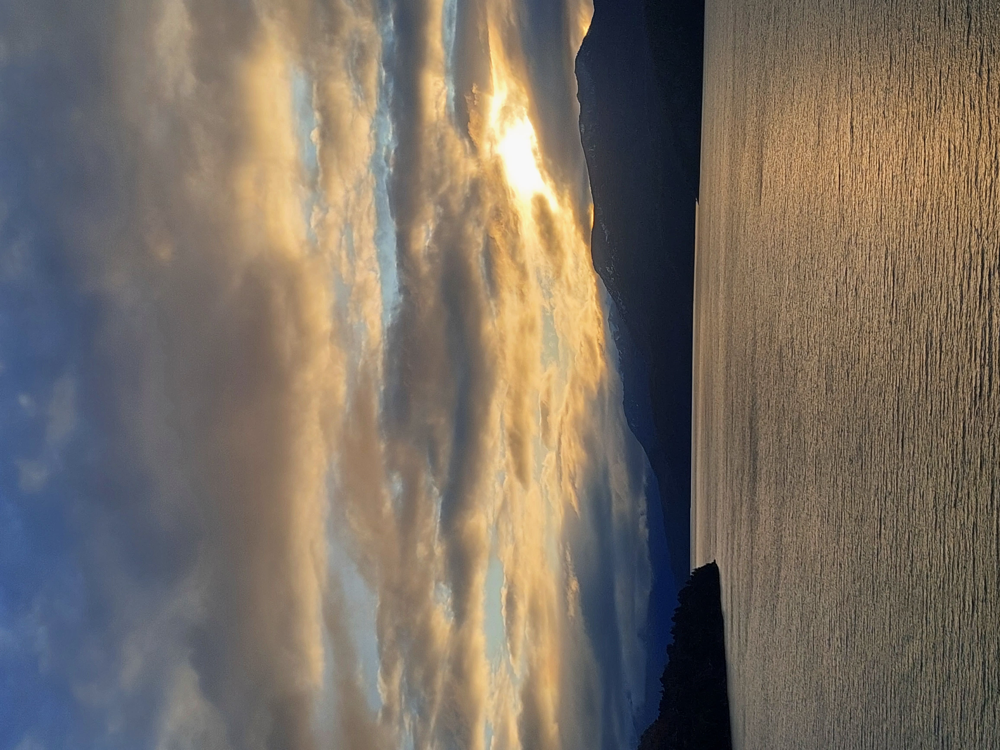
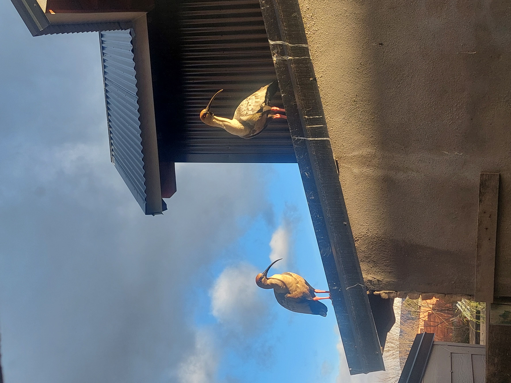

--- Estadía en San Martín de los Andes
Bienvenidos a Cabaña Ruhe
Bienvenido a Ruhe, un hospedaje ubicado en el corazón de la naturaleza patagónica, San Martín de los Andes. Cabaña Ruhe es un refugio cálido y acogedor pensado para quienes buscan descanso, tranquilidad y entorno familiar, con todo lo necesario para tu estancia. A 10km del centro de San Martín de los Andes y con vista a la montaña, te invitamos a disfrutar una estadía confortable, con el encanto de lo simple y lo natural.
Conocer Más 





--- Ubicación
San Martín de los Andes
Nuestra cabaña se encuentra rodeada de naturaleza y tranquilidad, a pocos minutos del centro y con acceso a senderos con paisajes únicos.
Ubicación--- Tarifas de la cabaña
Tarifas de Cabaña Ruhe
En Cabaña RUHE contamos con precios accesibles todo el año, con tarifas diferenciadas para temporada alta y baja. Tarifas especiales para estadías prolongadas de 7 noches o más de hospedaje.
Tarifas--- Terminos y condiciones de la cabaña
Termino y condiciones de Cabaña Ruhe
Al hospedarse en Cabaña Ruhe, usted acepta nuestras normas y condiciones para garantizar una estadía segura y agradable, Mire nuestros terminos y condiciones
Terminos y condicionesLugares turísticos en SMA
Mirador Arrayanes
Caminata corta desde el centro hasta un mirador con vistas al Lago Lácar y las montañas. Ideal para una salida rápida, con bancos y un cartel explicativo.
UbicaciónPlaya Catritre
Una de las playas más tranquilas del lago Lácar, con sombra de árboles, agua cristalina y espacio para picnic.
UbicaciónCostanera del Lago Lácar
Paseo ideal para caminar al atardecer o descansar en los bancos frente al lago. Muy seguro y con buena iluminación.
UbicaciónCerro Chapelco
Centro de esquí y trekking con vistas espectaculares. Ideal para deportes de invierno o caminatas en verano.
UbicaciónSendero de Laguna Rosales
Hermosa laguna ideal para un día de campo. Acceso por senderos desde el centro.
UbicaciónMuseo Primeros Pobladores
EL museo rescata la historia de los pueblos originarios y los primeros colonos de la ciudad. Cuenta con piezas arqueológicas, fotografías, objetos históricos y relatos fundacionales. Horario: Miércoles a sábados de 14:00 a 18:00 hs.Entrada libre y gratuita.
UbicaciónMuseo de historia natural
Museo dedicado a la paleontología y biodiversidad regional. Exhibe fósiles, réplicas de dinosaurios y fauna patagónica. Horario: Martes, viernes, sábados y domingos de 10 a 12 h y de 16 a 19 h Entrada: Paga (aprox. $5.000), con descuentos para estudiantes y jubilados.
UbicaciónLago lolog
Es uno de los destinos favoritos de la región por sus playas de arena con aguas poco profundas y templadas en verano (como Playa Bonita y Playa La Herradura), ideales para familias y deportes como el kayak o la pesca de truchas (Con permiso).
UbicaciónAlgunas de nuestras Reseñas
– letivillarroell. Instagram
– Claudia Isabel Torres. Facebook
– Claudia. Booking
– Nestor Wagner. Maps